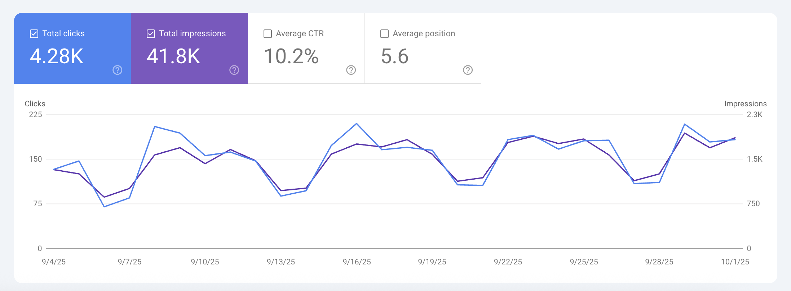
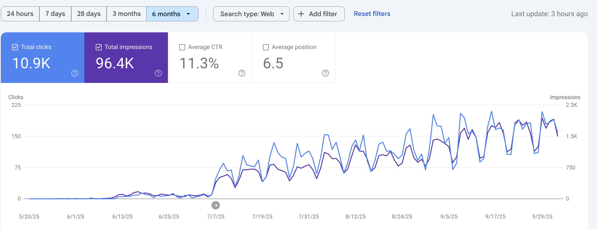

საიტის გაშვებამდე SEO სტარტი, ტექნიკური ოპტიმიზაცია, ტოპიკური ავტორიტეტის რუკა, ძველი დომენის სტრატეგიული გამოყენება და სამედიცინო კონტენტ სტრატეგია.
სამედიცინო სექტორში მზარდი ციფრული კონკურენცია. მხოლოდ ვებსაიტის ქონა საკმარისი არ არის. სჭირდებოდა სწორი SEO სტრატეგია ხილვადობისა და ნდობისთვის.
პროექტს ~1.5 თვით ადრე შეუერთდით, ვებსაიტის გაშვებამდე. დეველოპმენტის ფაზაში ტექნიკური SEO-ის საფუძვლის მომზადება. საიტის სტრუქტურისა და კონტენტ სტრატეგიის დაგეგმვა გაშვებამდე. JavaScript-ზე დაფუძნებული გვერდების ოპტიმიზაცია.
საძიებო ტერმინების იდენტიფიცირება, გვერდებთან შესაბამისობის ანალიზი. Topical Authority Map-ის შექმნა მომხმარებლის ინტენტისა და საძიებო სისტემის მოთხოვნების შესაბამისად.
ძველი ავტორიტეტული დომეინის გამოყენება არსებული ბექლინკებითა და ნდობით. რედირექტის ჩარჩოს იმპლემენტაცია ძველი URL-ებიდან SEO ღირებულების შენარჩუნებით.
კონტენტ სტრატეგია საძიებო ინტენტზე დაფუძნებული — თითოეული სტატია პასუხობს კონკრეტულ შეკითხვას. პროფესიონალი სამედიცინო მწერალი SEO-ოპტიმიზებული კონტენტისთვის. პოზიციების მონიტორინგი გაშვებიდან.
4 თვის სისტემატური მუშაობის შემდეგ, პროექტმა მიაღწია შემდეგ შედეგებს:



მოითხოვეთ უფასო SEO აუდიტი და გაიგეთ თქვენი საიტის პოტენციალი